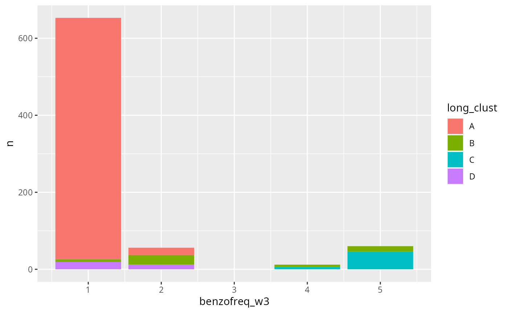

What are we aiming?
We aim to cluster the benzodiazepine use trajectories, in other words, check who maintained a low frequency use, who maintained a high frequency use, and maybe who changed their use frequency across the waves.
benzo_cld <- all_waves |>
dplyr::mutate(id = as.character(dplyr::row_number())) |>
dplyr::mutate(dplyr::across(dplyr::starts_with("benzofreq"), as.numeric)) |>
dplyr::relocate(id,
benzofreq_w1, benzofreq_w2, benzofreq_w3,
dplyr::everything()) |>
as.data.frame() |>
kml::cld(timeInData = 2:4)
benzo_cld |>
kml::kml()
#> ~ Fast KmL ~
#> ***************************************************************************************************S
#> 100 S
long_col <- benzo_cld |>
kml::getClusters(4) |>
tibble::as_tibble_col("long_clust")
todo <- dplyr::bind_cols(all_waves, long_col) |>
dplyr::mutate(dplyr::across(dplyr::starts_with("benzofreq"), as.numeric))
todo |>
dplyr::group_by(long_clust) |>
dplyr::summarise(dplyr::across(dplyr::matches("benzofreq_w[1-3]$"), mean))
#> # A tibble: 4 × 4
#> long_clust benzofreq_w1 benzofreq_w2 benzofreq_w3
#> <fct> <dbl> <dbl> <dbl>
#> 1 A 1.04 1.05 1.03
#> 2 B 2.65 1.52 2.90
#> 3 C 4.63 4.90 4.88
#> 4 D 3.13 4.65 1.39
todo |>
dplyr::group_by(long_clust) |>
dplyr::count(benzofreq_w3) |>
ggplot2::ggplot(ggplot2::aes(x = benzofreq_w3, y = n, fill = long_clust)) +
ggplot2::geom_col()
data_to <- todo |>
dplyr::select(-dplyr::matches(".*w[2-3]$"), -benzofreq_w1)
data_to |>
dplyr::count(long_clust)
#> # A tibble: 4 × 2
#> long_clust n
#> <fct> <int>
#> 1 A 646
#> 2 B 52
#> 3 C 52
#> 4 D 31
dados <- data_to |>
dplyr::rename(trajectory = long_clust) |>
dplyr::mutate(
trajectory = relevel(as.factor(dplyr::case_when(
trajectory == "A" ~ "Infrequente",
trajectory == "B" ~ "Frequente",
trajectory == "C" ~ "Redução de uso",
trajectory == "D" ~ "Aumento de uso"
)), ref = "Infrequente"),
dplyr::across(c(dplyr::contains("relationship"), sleep_quality_w1),
\(x) as.factor(dplyr::case_when(
x %in% c("Ruim", "Ruins",
"Regular", "Regulares") ~ "Worse",
x %in% c("Bom", "Bons",
"Excelente", "Excelentes") ~ "Better",
x == "Não se aplica" ~ NA_character_,
TRUE ~ NA_character_)
)),
household_income = as.factor(
dplyr::case_when(
household_income %in% c("A", "B") ~ "Upper",
household_income %in% c("C") ~ "Middle",
household_income %in% c("D", "E") ~ "Lower",
TRUE ~ NA_character_
)
),
color = as.factor(
dplyr::case_when(
color %in% c("Parda", "Preta", "Amarela", "Indigena") ~ "Não-branco",
color %in% c("Branca") ~ "Branco",
TRUE ~ NA_character_
)
)
) |>
dplyr::select(-state) |>
dplyr::relocate(trajectory, dplyr::everything())